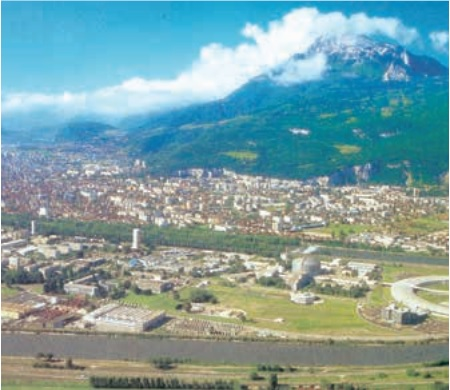

Factorii geoecologici sunt acei factori care determină și influențează caracteristicile mediului înconjurător. Mediul înconjurător reprezintă un sistem structurat de elemente, procese și fenomene, care îi conferă, la un moment dat, anumite caracteristici cantitative și calitative de ansamblu.
În cadrul său își desfășoară existența și activitatea societatea omenească.
Ca sistem deschis, mediul înconjurător are anumite schimburi de materie, de energie și de informație cu alte sisteme sau elemente cu care vine în interacțiune. De asemenea, ca sistem cu o anumită dinamică internă, acesta este influențat de părțile componente.
Este ușor de observat că mediul înconjurător, definit în raport cu societatea omenească, are o întindere spațială care se suprapune cu limitele spațiului locuit.
Factorii geoecologici pot fi naturali sau antropici (introduși de om).[…]
(Adaptat după Manualul de Geografie, Probleme fundamentale ale lumii contemporane clasa a XI-a, Octavian Mândruț)